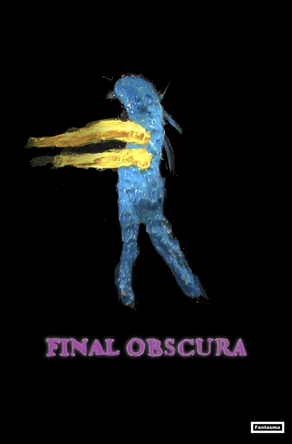

Screening of Final Obscura by James Fotopoulos & Performance by Billion Children
UNDA.M.93 is pleased to announce a screening of James Fotopoulos’ film Final Obscura (2024, 71 min) as part of our STOP WORSHIPPING CORPSES programming.
The past, present and future.
Opening performance by Billion Children.
Doors at 7:30, performance at 8, and screening at 9 pm